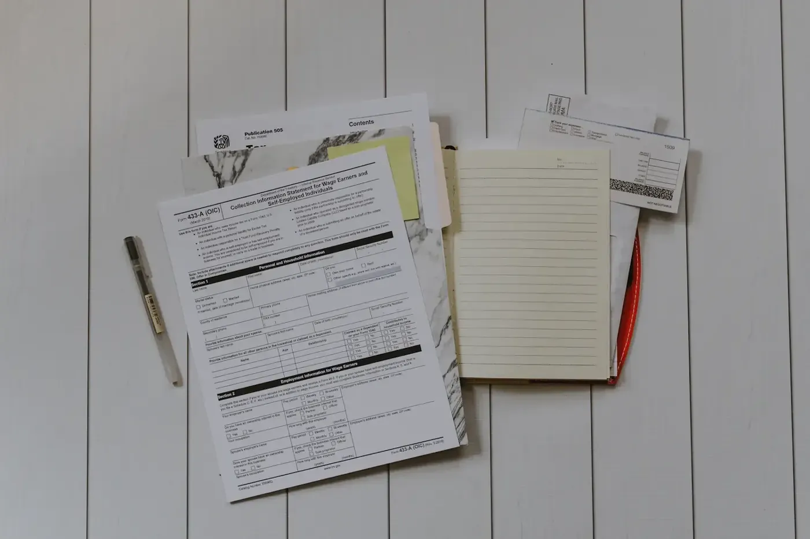
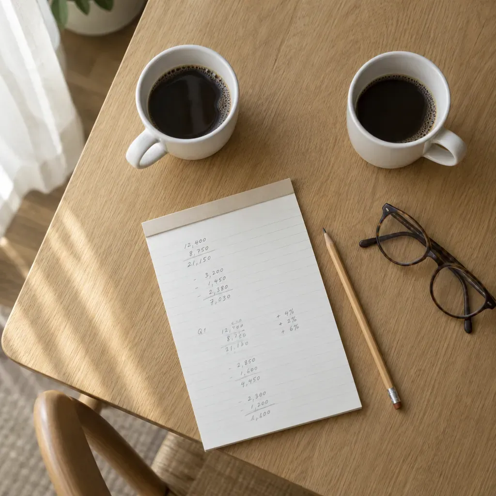
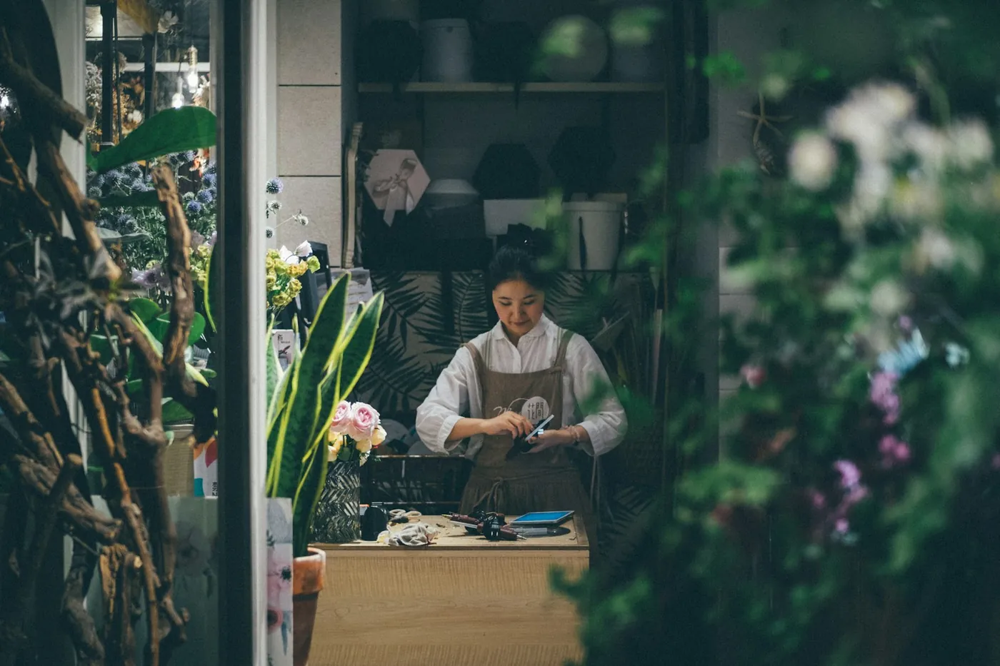
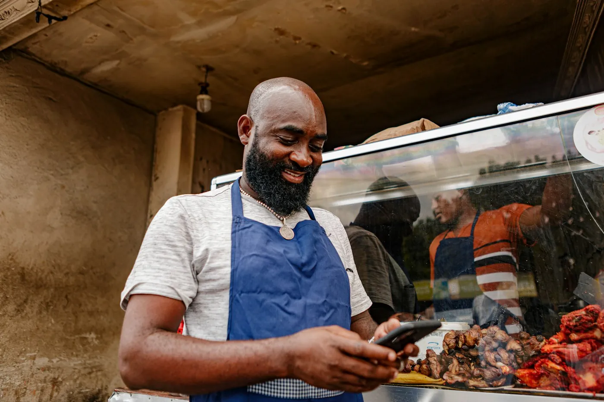
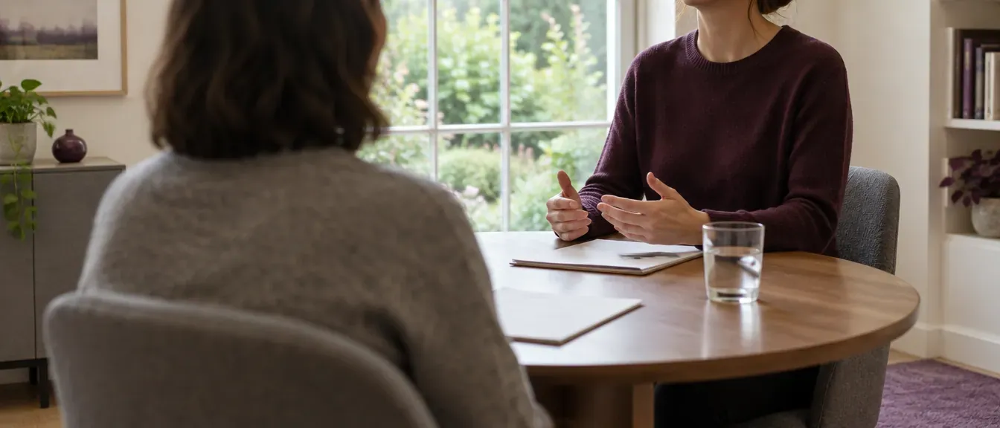
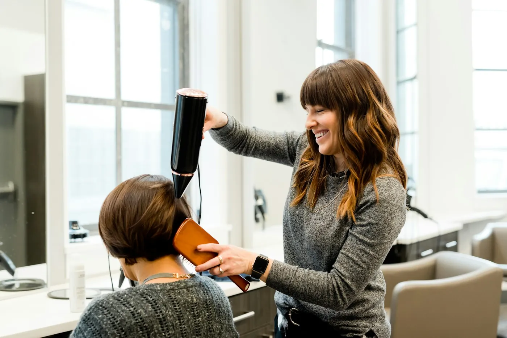

Boekhouding
Enkelvoudig, dubbel of forfaitair. Met tussentijdse cijfers, zodat u weet waar u staat voor het jaar om is.
Vraag hieroverIk ben Stijn Lemmens, erkend boekhouder-fiscalist. Vanuit de Molenstraat in Nijlen doe ik de boekhouding, de btw en de belastingen voor zelfstandigen, vennootschappen, vzw's en gezinnen. U hebt één aanspreekpunt, en dat ben ik.
Klik op wat bij u past. Dan staat het al in het contactformulier en weet ik meteen waar het over gaat.
Enkelvoudig, dubbel of forfaitair. Met tussentijdse cijfers, zodat u weet waar u staat voor het jaar om is.
Vraag hierover
maand of kwartaalMaand- of kwartaalaangiftes, de klantenlisting en de intracommunautaire opgaves. Correct en op tijd.
Vraag hierover één keer per jaar
één keer per jaarHet resultaat van uw jaar, en de jaarrekening die naar de Nationale Bank moet. En ik leg u graag uit wat de cijfers zeggen.
Vraag hierover
ook voor gezinnenVoor u en uw gezin, ook als u geen zaak hebt. Met de aftrekken die u zelf niet zou vinden.
Vraag hierover
voor startersWelke rechtsvorm, welke verzekeringen, een financieel plan, en de inschrijving bij de KBO, de btw en de sociale zekerheid.
Vraag hierover
vennootschap of vzwVennootschaps- en rechtspersonenbelasting, en hulp als uw zaak van vorm verandert of de zetel verhuist.
Vraag hieroverIk wil mijn cliënten begeleiden op een professionele, maar ontspannen manier. Met vertrouwen als basis, want alleen dan werk je echt goed samen.Stijn Lemmens
Afgestudeerd als industrieel ingenieur chemie aan De Nayer in Sint-Katelijne-Waver. Twee jaar aan de slag in die sector.
Het kantoor van mijn vader trok me aan. Ik koos voor een nieuwe opleiding, om de zaak later over te kunnen nemen.
180 gradenBedrijfsmanagement, optie accountancy en fiscaliteit, aan de Katholieke Hogeschool Mechelen. Drie jaar studie in twee jaar.
Mijn stage deed ik op zijn kantoor. Hij was mijn stagemeester, met toen al meer dan veertig jaar ervaring.
Na examen kwam ik op het tableau van erkende boekhouders-fiscalisten. Het kantoor draagt intussen mijn naam.
Een ingenieur kijkt hoe iets in elkaar zit. Dat doe ik nu met uw cijfers, en ik leg u uit wat ze betekenen.
Kies uw situatie. U krijgt een lijstje van wat handig is om bij te hebben. Vink af wat al klaarligt.

We overlopen samen de keuzes, zodat u weet waar u aan begint en wat u opzij moet zetten.
Hebt u niet alles? Geen probleem, de rest zoeken we samen.

U vertelt wat u doet, ik zeg eerlijk wat ik voor u kan doen. Op kantoor in de Molenstraat.
Facturen, afschriften en attesten bezorgt u op de manier die we samen afspreken.
Boekhouding, btw en aangiftes, op tijd. Ontbreekt er iets, dan hoort u het van mij.
Bij de jaarrekening nemen we de cijfers samen door, als u dat wil. Wat liep goed, en waar let u volgend jaar op.
Wie begint, krijgt meteen een pak regels over zich heen. Daarom zitten we eerst samen, voor u iets ondertekent.

Iedereen die een review naliet op Google, gaf vijf sterren. Dat vertrouwen wil ik elk jaar opnieuw verdienen.
Bekijk op GoogleVoor ondernemers en gezinnen uit de drie deelgemeenten en de dorpen errond. Komt u met de trein, dan stapt u af in station Nijlen, op de lijn tussen Antwerpen en Herentals.
Ja. Ook in bijberoep schrijft u zich in bij de KBO, sluit u aan bij een sociaal verzekeringsfonds en regelt u de btw. Ik overloop met u wat er voor uw activiteit nodig is, en wat u opzij zet.
Zeker. Ook zonder eigen zaak kunt u bij mij terecht voor de personenbelasting van u en uw gezin.
Ja. Voor vzw's doe ik de boekhouding, de jaarrekening en de rechtspersonenbelasting. Ook als de statuten of de zetel veranderen, help ik mee.
Dat hangt af van uw rechtsvorm en uw omzet. Ik zeg u welke voor u geldt, en doe ze allebei. Voor sommige beroepen kan ook een forfaitaire regeling.
Bel me, dan bekijken we samen wanneer de overstap het best past en wat ik van uw vorige boekhouder nodig heb.
Voor een eerste kennismaking zie ik u graag op kantoor in de Molenstraat. Daarna spreken we af wat voor u het handigst is.
Bel, stuur een berichtje of vul het formulier in. Een eerste gesprek is vrijblijvend, op afspraak.
Ik maakte deze demo voor u om te tonen wat er kan. Na een kort gesprek maak ik er iets veel persoonlijkers van, helemaal naar uw wens.
Vrijblijvend. Ik kom langs of we bellen.
Op maat, op uw eigen domein.
Geen voorschot. U betaalt pas als alles klaar is.
Hosting, domeinnaam en kleine wijzigingen, zoals nieuwe openingsuren.
Omdat een voorbeeld meer zegt dan een mail. Zo ziet u meteen wat er kan, en het kost u niets.
Nee. Het gesprek is vrijblijvend. Vindt u het niks, dan is het daarmee gedaan.
Na ons gesprek staat uw site binnen 10 tot 14 dagen online.
Zeker. Uw domeinnaam kan gewoon blijven, de nieuwe site komt in de plaats van de oude.
Nee, dat doe ik op basis van ons gesprek. Eigen foto's zijn mooi meegenomen, maar niet nodig om te starten.